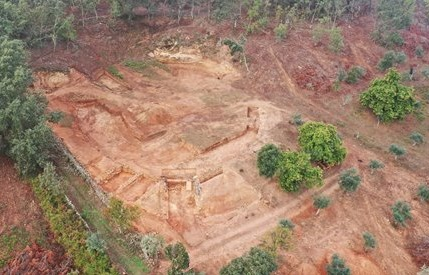

|
AMMAIA La ciudad de Ammaia se localiza en Marvao. En época de Claudio ya era civitas y en época de Nerón recibió el titulo de municipium. Se han hallado multitud de restos de adornos personal y gran cantidad de cerámica de uso domestico. Declarada monumento nacional desde 1949. Se conserva parte del foro, restos de la puerta monumental, con una de las torres, restos del podium del templo de culto imperial, restos de termas. Esta totalmente por excavar. La ciudad fue identificada en 1932, gracias
al hallazgo de una inscripción tallada en la que se hacía referencia a la
CIVITAS AMMAIENSIS. Aunque la ciudad había sido abandonada sobre el año mil, su
existencia constaba en las crónicas medievales, que la localizaban a 120
kilómetros de Mérida y a 100 de Cáceres.
En julio de 2019, se hallan los restos del anfiteatro.
Fue construido con materiales económicos el anfiteatro presenta
ingeniosas soluciones arquitectónicas, pues parte de su gradería se
construyó cortando a pico la roca madre para ahorrar material. Una
cuarta parte de los asientos se construyeron amontonando grava entre dos
muros e instalando encima bancos de madera.
 Ver: Anfiteatros Romanos
|
| AMMAIA | MIROBRIGA | CONIMBRIGA | EVORA |
| HISPANIA ROMANA | OLISIPO | VILLA ROMANAS PORTUGAL | RESTO IMPERIO |